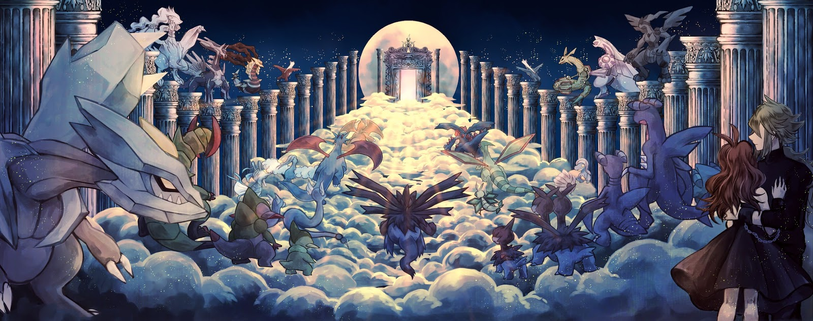

região de Sinnoh é muito ligada ao criacionismo. Arceus, que é tido como o Deus Pokémon, deu o pontapé inicial e para lhe ajudar ele criou Mew, que ficaria responsável por criar todos os Pokémon comuns. Nesse processo ele deu origem ao Palkia que criaria e controlaria o espaço, Dialga que criaria e controlaria o tempo e a trinca de guardiões que criariam os espíritos (humanos) e dariam dádivas a eles. Depois começou a se moldar a terra, e para isso Kyogre, Groudon e Rayquaza foram criados, os três tinham o papel de equilibrar as forças da natureza. Bem, o início do mundo Pokémon é basicamente isso. Depois, com interferência humana e dos próprios Pokémon, surgiram diversas histórias com infinitas interpretações que levaram a criação das lendas.
Durante a criação do mundo Pokémon, Uxie foi o responsável por criar a sabedoria/conhecimento. Algumas lendas dizem que Uxie deu sabedoria/conhecimento aos seres humanos, fazendo com que os mesmos conseguissem pensar e solucionar problemas, consequentemente, melhorando a qualidade de vida. Devido a essas citações, o Pokémon é conhecido como ''O ser do conhecimento''.
Outras lendas tratam Uxie como um ser ''perigoso'', pois, olhar diretamente para os olhos do Pokémon poderá acarretar a perda de memória.
Ele representa a onisciência.
Durante a criação do mundo Pokémon, Mesprit foi o responsável por criar as emoções. Tanto a alegria quanto a tristeza foram criadas por este Pokémon. O coração humano se encheu de emoção quando Mesprit voou. O Pokémon é conhecido como ''O ser da emoção''.
Algumas lendas dizem que Mesprit está adormecido no fundo de um lago, mas seu espirito sobrevoa a superfície do lugar.
Ele representa a onipresença.

Durante a criação do mundo Pokémon, Azelf foi o responsável por criar a força de vontade. Graças a ele, os seres humanos se tornaram determinados a realizarem tarefas e a superarem obstáculos. O Pokémon é conhecido como ''O ser da força de vontade''.
Azelf adormece no fundo de um lago para manter o equilíbrio do mundo.
Ele representa a onipotência.
Dialga é um Pokémon citado em lendas antigas na região de Sinnoh. Segundo as mitologias de Sinnoh, o tempo avança devido ao nascimento de Dialga, enquanto seu coração bater, o tempo continuará avançando.
Com seu incrível poder, Dialga consegue viajar através do passado e do futuro, além de conseguir controlar o fluxo temporal.
Há lendas que dizem que o Celebi provém do Dialga, por isso que o guardião da floresta consegue viajar pelo tempo.
Assim como Dialga, Palkia é citado em lendas antigas da região de Sinnoh. Segundo as mitologias da região, a estabilidade do espaço se deve ao fato da respiração do Palkia. Por controlar o espaço, o dragão espacial consegue viajar através das dimensões e com essas viagens, o Pokémon distorce o espaço.
Algumas lendas dizem que Palkia vive em uma fossa espacial e usa todo os seu poder para sair e mudar de dimensão.
Há lendas que dizem que o Jirachi provém do Palkia, por ser um Pokémon que veio espaço há toda uma lógica por trás disso.
Heatran habita cavernas vulcânicas e graças ao formato de seus pés, ele consegue escalar paredes. Parece uma tartaruga sem casco, devido a isso podemos compara-lo à criatura mistica tartaruga mundo e ao pré histórico Anquilossauro.
O corpo do Pokémon é feito de um aço muito resistente. Mas devido a sua temperatura, o aço é parcialmente derretido e se torna manchas em seu corpo.
O sangue fervente, como magma, circula seu corpo.
Ligado diretamente a criação do mundo Pokémon, Regigigas, segundo lendas, moveu os continentes com cordas e os posicionou como nós conhecemos hoje. Assim como os regis, esse Pokémon é baseado no mitológico golem
As lendas afirmam que esse colossal Pokémon deu origem a outros três monstrinhos. Usando o inanimado ele criou Regirock, Regice e Registeel.
Depois de mover os continentes, ele criou um templo em Sinnoh, mais precisamente em Snowpoint City, e o lugar veio a se tornar sua moradia.
Giratina era tido como um Pokémon muito violento, devido a isso foi banido por Arceus, que o mandou para o mundo distorcido. Nesse mundo paralelo, tudo que conhecemos é distorcido e estranho.
Como Sinnoh é ligada ao cristianismo, Giratina é tida como Lúcifer do mundo Pokémon. A pedido de Deus, Miguel baniu o irmão Lúcifer do mundo, mandando ele para o inferno (mundo distorcido na franquia Pokémon).
O Pokémon observa o nosso mundo através do mundo distorcido e, algumas lendas afirmam que o Pokémon aparece em cemitérios para buscar as almas.
Segundo lendas, quem dorme com a pena da Cresselia terá sonhos alegres. Ela representa a lua crescente.
Quando voa, o Pokémon libera partículas brilhantes de suas asas, formando algo semelhante a uma aurora boreal.
Nas noites de lua crescente, a aurora da sua cauda se estende e ondula lindamente.

Darkrai é um Pokémon que possui dupla personalidade. Em noites de lua nova ele acalma as pessoas fazendo elas dormirem. Porém, em uma noite sem lua, o Pokémon revela seu verdadeiro lado sombrio e assustador, com isso causa terríveis pesadelos nas pessoas.
Quando se sente ameaçado, o Pokémon, para se proteger, faz com que o inimigo adormeça, porém não causa nenhum dano. No jogo, isso é demonstrado através do movimento Dark Void.
Darkrai persegue pessoas e Pokémon em seu território, fazendo com que eles provem de terríveis pesadelos.
O Pokémon evita ao máximo ser detectado, com isso pode se camuflar juntamente com as flores.
É tão poderoso que consegue absorver as toxinas de um determinado local e, transformar terras arruinadas em grandiosos campos de flores.
As flores do seu corpo se transformam em uma grande flor, se for abraçado e se sentir gratidão na alma do treinador.
Segundo lendas da região de Sinnoh, o Pokémon nasceu de um ovo que chocou antes da existência do universo, então ele começou a moldar o mundo Pokémon.
Juntamente com os seus 1000 braços, o Deus Pokémon deu origem aos outros monstrinhos existentes e, claro, ao mundo Pokémon.
Ao nascer, o Alpha criou Pokémon que controlariam o espaço e o tempo e, criou uma trinca de guardiões que ficariam responsáveis pela criação dos humanos. Não satisfeito, criou Mew, que seria responsável pela criação das espécies normais de Pokémon.
Obrigado por terem lido até aqui, espero que tenham gostado do nosso guia de viagem por sinnoh, lembrando que nem todas as localidades podem ser visitadas devido a periculosidade dos pokemon nessas áreas, fora isso, tenha uma boa viagem e se divirta!